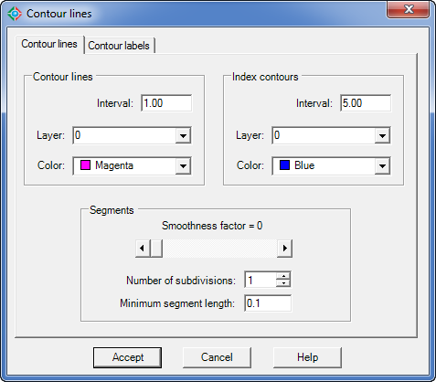
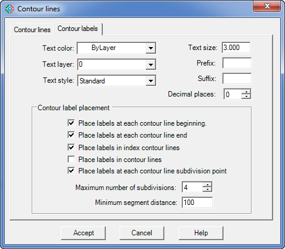

|
|
Toolbar:
Menu: CAD-Earth > Mesh commands > Contour lines.
|
|
|
Command line: CE_CONTOURLINES
Prompts:
Select triangulation mesh:
CAD-Earth version: Plus, Premium. |
.png)
.png)
Selecting an existing terrain mesh created with the CE_IMPGEMESH command, contour polylines can be created. The user can specify the vertical separation, layer, color and smoothness factor for contour polylines and the text layer, color, size, prefix, suffix, decimal places and placement options for contour elevation annotations (labels). Existing contour polylines will be automatically updated if settings are changed.
Dialog box settings (Contour lines tab):

Contour lines dialog box (Contour Lines tab)
ØContour lines.
•Interval. Vertical separation between contour polylines.
•Layer. Contour polylines will be created in the layer selected.
•Color. Select color for contour polylines.
ØIndex contours.
•Interval. Vertical separation between contour polylines.
•Layer. Index contour polylines will be created in the layer selected.
•Color. Select color for index contour polylines.
ØSegments.
•Smoothness factor. Enter value between 0 (contours with straight segments) and 10 (rounded contour segments with maximum allowable bulge).
•Number of subdivisions. Straight contour segments will be divided by this value before roundness is applied. If the resulting segment length after subdivision is less than the minimum specified the minimum segment length will be used to subdivide the contour segment.
•Minimum segment length. Minimum allowable length for contour segments after subdivision.

Contour lines dialog box (Contour labels tab)
Dialog box settings (Contour labels tab):
ØText.
•Color. Selected color will be used for contour elevation annotations.
•Layer. Contour elevation annotations will be drawn in the layer selected.
•Style. The color selected will be used for contour elevation annotations.
•Size. Height in drawing units for contour elevation annotations.
•Prefix. Text entered will be added before contour elevation annotations.
•Suffix. Text entered will be appended to contour elevation annotations.
•Decimal places.
ØContour label placement.
•Place labels at each contour line beginning. Contour elevation annotations will be placed at the beginning of each contour polyline.
•Place labels at each contour line end. Contour elevation annotations will be placed at the end of each contour polyline.
•Place labels in index contour lines. Contour elevation annotations will be placed along each index contour polyline.
•Place labels in contour lines. Contour elevation annotations will be placed along each main contour polyline.
•Place labels at each contour line subdivision point. Contour elevation annotations will be placed along contour polylines at each point resulting from the maximum number of subdivisions or minimum segment distance.
•Maximum number of subdivisions. Contour polylines will be divided by this value. If the resulting segment length is less than the minimum specified, the minimum segment length will be used to subdivide the contour polyline for the placement of contour elevation annotations.
•Minimum segment distance. This is the minimum allowable segment length for contour polyline subdivision for the placement of contour elevation annotations.
Tips:
•The most exact representation of contour lines is achieved by straight segments (smoothness factor = 0).
•Use a smoothness factor of zero if you want to reduce the drawing file size to the maximum possible, avoiding the insertion of additional vertices and bulge information in contour polylines.
•If rounded contour polylines intersect, reduce the smoothness factor until they don't cross each other.
•Existing contour polylines will be automatically updated if settings are changed.
Related topics:
•Import terrain mesh from Google Earth
Copyright © 2023 Arqcom Software
Google Earth© is a registered trademark of Google inc. All other trademarks are the property of their respective owners.